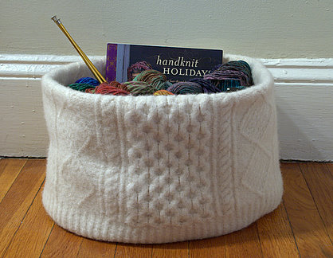
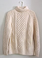
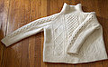

|
||
Premium Patterns Wintry Mix Mitts Love Bytes HawkeyeFree Patterns Kiddie Cadet Summerlin Ruffled Scarf Seamless DS Sock Simply Seamless Pouch Myriads of MushroomsExtras DIY Mitten Blocker Felt Patch Tutorial Yarn Dyeing Tutorial Needle Pouches Knitting Journal |
June 04, 2007 - Posted by Grace SchneblyBasket CaseAfter working for a little over a week, I finally finished my Clapotis! I am a little bit behind Alice but I ended up doing six extra repeats in the straight section of the pattern. I haven’t washed it yet, but actually got a chance to wear it around my apartment today! It has turned cold and rainy here for the moment, so I guess I finished my Clapotis just in time! I absolutely love the size and color of it, and I definitely see making another sometime in the near future. I will show off some pictures once it has been washed and is dry. I still haven’t decided if I am going to block it out with pins… and I don’t even know if I have somewhere in my apartment that is big enough to lay it out on. Check back soon for the pictures of it finished! In the mean time you should check out these beautiful Clapoti from other seriously skilled knitters! Staci at Very Pink is making her 9th Claptois and it’s absolutely gorgeous. She is using Noro Silk Garden and has some great photos showing how the pattern knits up. JennyO has started her Silk Garden Clapotis and it is looking great! I will definitely be keeping my eye on this! She is also using Silk Garden, and I love the colorway she chose. Octopus Knits has an amazing Mountain Sky Clapotis knit on US3 needles. It is so beautiful and it looks absolutely perfect!!! She has some serious patience and skills! 
Anyways, I really liked the knitting basket but didn’t have any felted sweaters so I hit the thrift shops hoping to get lucky. Well after searching for a couple of months my mom sent me a beautiful hand knit aran wool sweater. It said it was hand knit in Ireland with Irish wool. It looks like this sweater was almost exactly like the one they used to make the original basket. Honestly I felt a little guilty that it was just going to get felted and cut up. But I wasn’t going to wear it, so I threw it in the wash and it felted really nicely. All the textural detail was still easily visible and the fabric was nice and tight. I made it in a day, and it was really easy to make. I followed the instructions pretty closely, except instead of machine stitching the shoulder ends together (after cutting off the sleeves) I hand sew them with a simple whip stitch. I sewed the sleeves together using the zigzag stitch on my machine. It was pretty much impossible to steam block with my iron so I used a spray bottle and got it damp then filled it with towels and clothing to get it in the shape I wanted as it dried. It was a really simple project and created a large and deep basket which can hold tons of yarn and random stuff. Although I don’t know how practical it is for me to keep yarn out in the open with three long haired cats running around. The sewing was really simple, and I am sure it could be all hand sewed if you wanted to make one but didn’t have a machine. The hardest part of the whole thing was finding the sweater. Lastly I wanted to mention how surprised I am at the response we got to the yarn give away! If you haven’t yet, you can still enter to win the sock yarn hand dyed by Alice that she used to make her Chevron Scarf. We will be drawing the winner next Sunday, June 10. Thanks to everyone who has already entered! |
   Recent ReviewsRecent Posts
 Our Favorites
|
| © 2007 KathrynIvy.com | ||

{kind=link}
{kind=link}